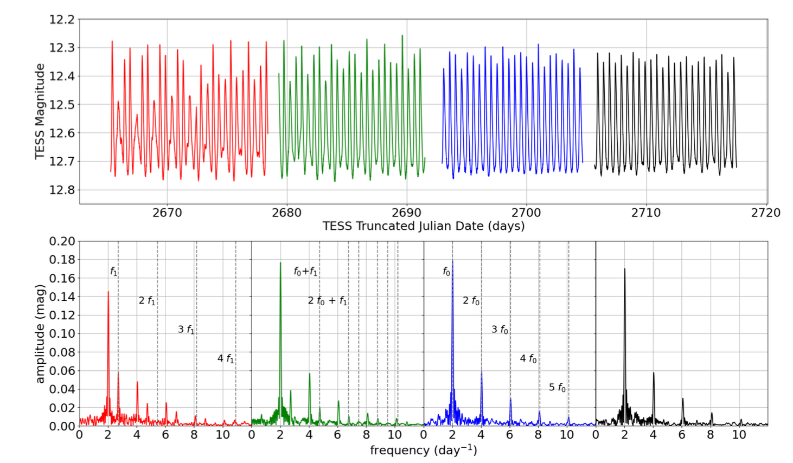
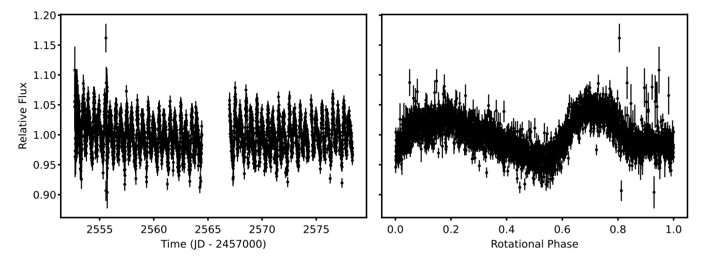
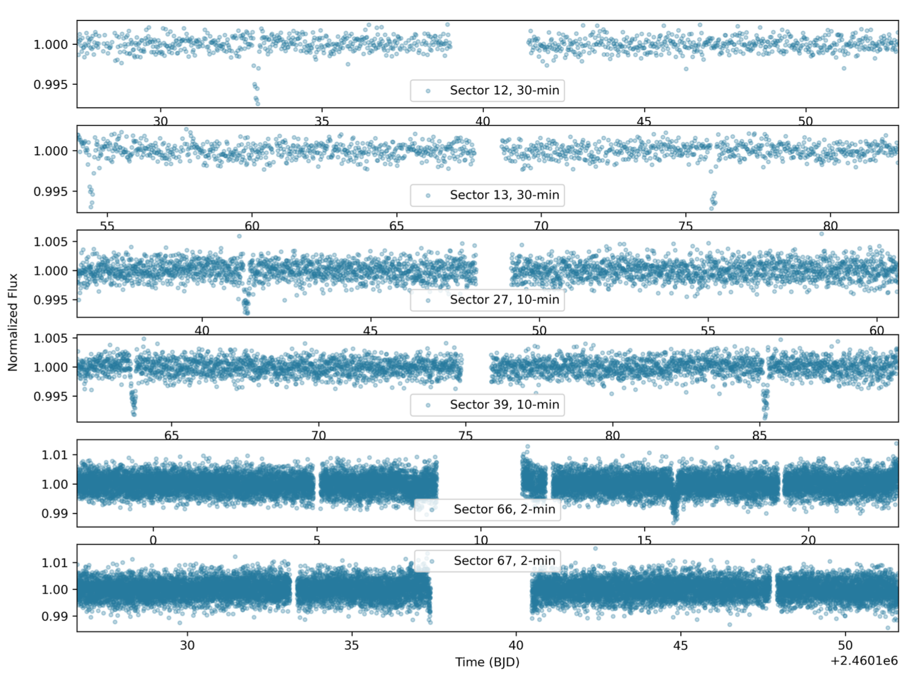

Welcome TESS followers to our latest news bulletin!
This week, we are looking at three recent papers from the archive. Enjoy!
Caught in the Act: Observations of the Double-mode RR Lyrae V338 Boo During the Disappearance of a Pulsation Mode (Carrell et al. 2024) :
RR Lyrae stars are pulsating low-mass variable stars residing in the instability strip of the HR diagram that are important for our understanding of not only stellar and galactic astrophysics but, utilized as standard candles for measuring distances in the universe, for cosmology as well. Carrell et al. (2024) present a detailed analysis of V338 Boo, a double-mode RR Lyrae, that provides new insight into the still-unclear physical mechanism responsible for the Blazhko effect. TESS observed V338 Boo in Sectors 23, 24, where the target behaved like a typical RRd star, and again in Sectors 50, and 51. To supplement the TESS data and study the longer-term behaviour of V338 Boo, AAVSO members obtained follow-up observations between 2022 July 12 and 2022 August 14. Combining all available data, Carrell et al. (2024) noticed a clear change in the lightcurve shape and corresponding frequency analysis of V338 Boo, and found that the star ceased pulsating completely in the first overtone mode over the course of several days during Sector 51. The mode not only reappeared in the AAVSO data but, but again became dominant. The authors note that, overall, the target exhibits anti-correlated periodic changes in both pulsation modes, and argue that either the first overtone mode was regenerated between the end of the TESS data and the beginning of the AAVSO observations, or the star retains a “memory” of it. Furthermore, Carrell et al. (2024) raise the possibility that “mode-switching” RR Lyrae are instead undergoing periodic changes similar to V338 Boo. Thanks to TESS, the authors were able to identify and directly study, for the first time, a potential transition from RRd to RRab (or vice versa).
Insights on the Rotational State and Shape of Asteroid (203) Pompeja from TESS Photometry (Humes & Hanus 2024) :
(203) Pompeja is a main belt asteroid characterized by highly variable visible and infrared spectral appearance, potentially attributed to surface variations. The asteroid exhibited a steep red spectral slope during the 2021 apparition, consistent with trans-Neptunian objects, and a more moderate slope during the 2022 apparition consistent with primitive Main Belt asteroids. Humes & Hanus (2024) present a detailed analysis of TESS FFI observations of (203) Pompeja, utilizing a custom photometric extraction method designed to obtain high quality photometry of the target. (203) Pompeja was observed by TESS during Sector 46, when the asteroid was at a heliocentric distance of about 2.8 AU and phase angle of about 20 degrees. The authors used 16x16 pixel cutouts of the FFI along the predicted path of the asteroid (which takes a few hours to cross the corresponding field of view), including frames where the target is not present. Humes & Hanus (2024) extracted background-subtracted frames containing the target, and obtained its lightcurve via aperture photometry with a 3-pixel radius. The authors confirmed the validity of their method by extracting the lightcurve of the asteroid 354 Eleonora and comparing it to the available whole-FFI lightcurve. Utilizing Lomb-Scargle periodogram analysis of the TESS data, Humes & Hanus (2024) find a best-fit period of ~12 hours for (203) Pompeja with an amplitude of about 0.07 mag and a respective synodic period of ~24 hours, assuming the lightcurve is double-peaked, consistent with previous measurements. The measurements enabled refined models of the asteroid’s surface appearance and rotation properties, suggesting two potential configurations – one with a sidereal period of P1 = 24.085 days, spin pole coordinates of lambda1 = 132 degrees, beta1 = 41 degrees, and another with P2 = 24.084 days, lambda2 = 307 degrees, beta2 = 41 degrees. Thanks to TESS, Humes & Hanus (2024) were able to confirm that the sidereal period of (203) Pompeja is about 24 hours, addressing previous concerns associated with the similarity to Earth’s rotation, and update the models of the asteroid’s shape and rotation.
Discovery and Characterization of an Eccentric, Warm Saturn Transiting the Solar Analog TOI-4994 (Rodrıguez Martinez et al. 2024) :
Transiting giant planets with orbital periods in the range of ~10-200 days provide important insight into planetary formation and evolution. Unlike their inflated “hot” Jupiter siblings, the atmospheres of these “warm” giants (with effective temperatures lower than ~1,000 K) are unlikely to be larger than expected and have primordial observable properties. Rodriguez Martinez et al. (2024) present the detection and characterization of TOI-4994b – the latest addition to the population of warm Saturns. TESS observed the target in Sectors 12 and 13 at 30-min cadence, Sectors 27 and 39 at 10-min cadence, and again in Sectors 66 and 67 at 2-min cadence, and enabled the detection of a total of 11 transits. The authors supplement the TESS data with photometric observations from LCOGT and ASTEP-ANTARCTICA, as well as high-resolution spectroscopic measurements from the Planet Finder Spectrograph, CHIRON, HARPS, CORALIE, and FEROS, and speckle imaging from SOAR. To obtain the physical and orbital parameters of the TOI-4994 system, Rodriguez Martinez et al. (2024) combined all the available data with Gaia and SED data into a global model. Their best-fit solution shows that the host star is effectively an analog to the Sun, with M = 1.005 MSun, R = 1.055 RSun, and Teff= 5640 K. The star has an estimated age of about 6.3 Gyr, is slightly enhancemed in metallicity compared to the Sun ([Fe/H] = 0.165 dex), and has a predicted rotation period of 46.2 days. The planet around it has a mass of 0.28 MJup, radius of 0.76 RJup, a bulk density of 0.78 g/cm3, and an equilibrium temperature of ~718 K. It completes one orbit around the parent star in ~21.5 days, the orbit has an eccentricity of e ~ 0.32 and is practically edge-on (inclination ~ 89.6 degrees). The authors find no indications of additional planets in the system which, combined with the moderately eccentric orbit of the planet, potentially points to past dynamical instability. Thanks to TESS, Rodriguez Martinez et al. (2024) were able to detect, validate, confirm, and characterize a new transiting warm Saturn, TOI-4994b, around a Solar twin.

Fig. 1: Taken from Carrell et al. (2024). Upper panels: TESS lightcurve of the RR Lyrae V338 Boo, color-coded by sector (green and red for Sector 50, blue and black for Sector 51). Lower panels: corresponding frequency analysis, highlighting multiple peaks, where f0 and f1 represent the fundamental and first overtone modes, respectively.

Fig. 2: Taken from Humes & Hanus (2024). Left panel: TESS lightcurve of the asteroid (203) Pompeja extracted from the FFI data. Right panel: Same as left panel but phase-folded on the best-fit synodic period of 24.092 hours.

Fig. 3: Taken from Rodriguez Martinez et al. (2024). Available TESS photometry (six sectors total) of the warm Saturn TOI-4994b, highlighting the prominent transits of the planets across its Solar analog parent star.